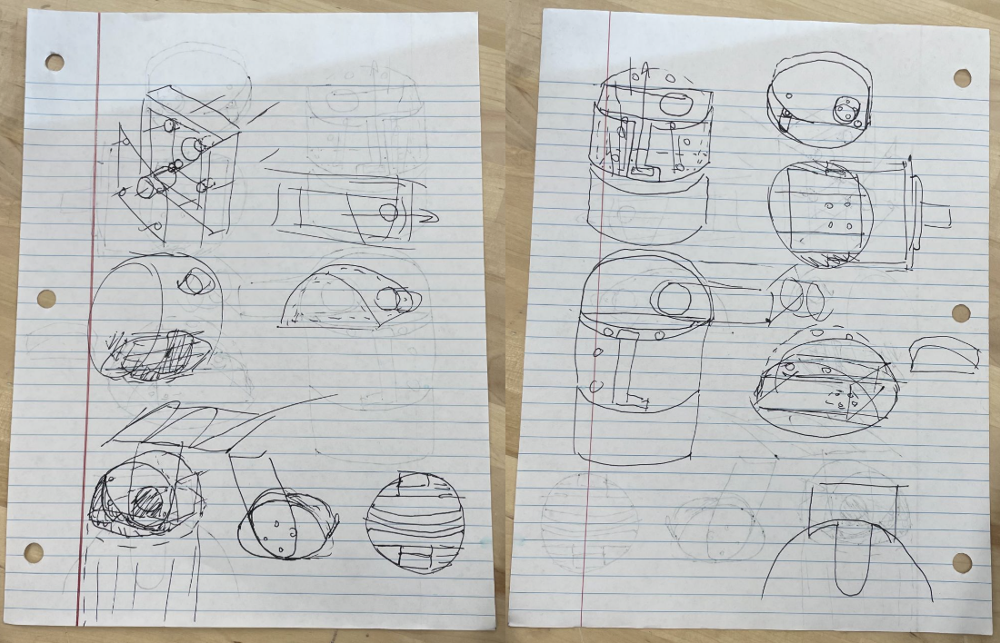
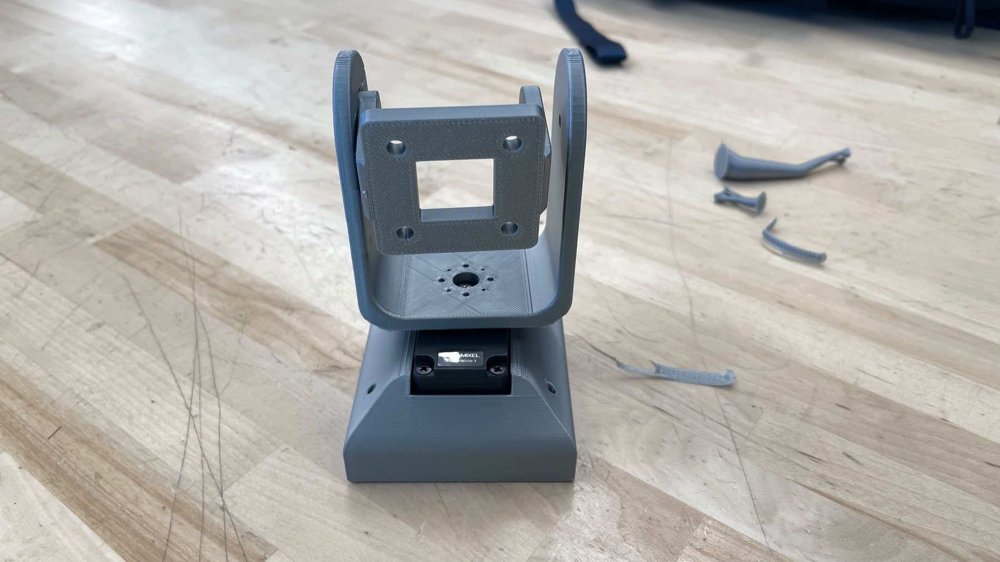
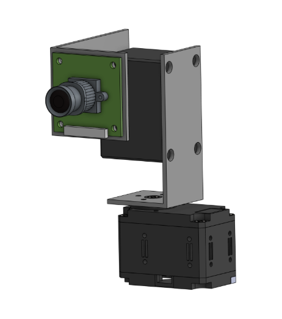
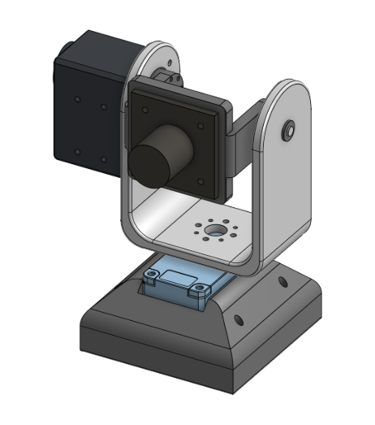
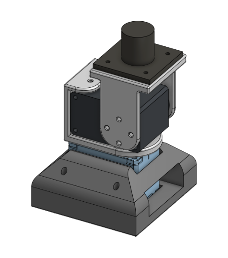
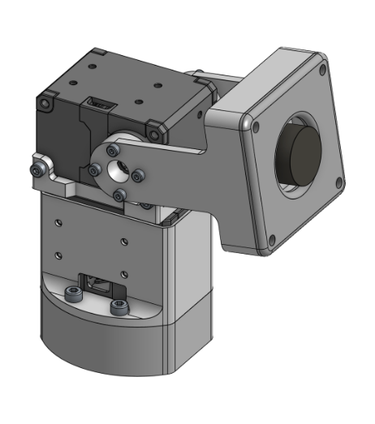
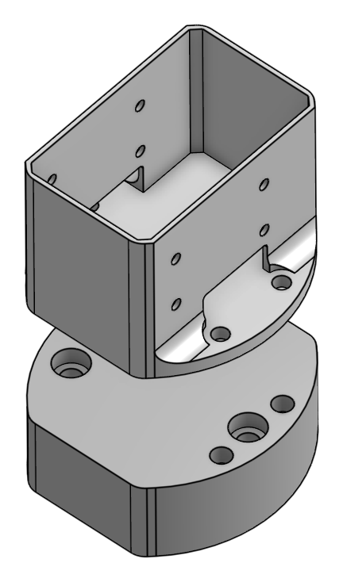

Problem and requirements
The driver needs a camera that can look side to side and up and down without turning the rover or the arm, and it has to fit among the other hardware on the rover.
| Axes | Pan (yaw, the "no" motion) and tilt (pitch, the "yes" motion) |
| Size | Compact, so it stays clear of the rover arm. The enclosure has to stay close to the current footprint. |
| Precision | Position feedback and repeatable angles |
| Build | Mainly 3D printed, with a bearing on the passive side, and stiff enough for the load |
| View | The base must not block the camera when it looks down |
| Stretch goal | IMU-based self-stabilization |
How it works
- Pan: a base servo under the U-fork rotates the whole head.
- Tilt: a second servo, centered inside the U, drives one arm. The other arm pivots on an M3 screw through a small flanged bearing, so the camera is supported on both sides.
- Camera: a fisheye camera on a square plate, screwed on from the back to leave room for the wiring behind it.
- Servo cover: a cover over the tilt servo protects it and gives the head a cleaner, more intentional look (CAD only so far).
- Wiring: DYNAMIXEL servos daisy-chain on one bus, so there's one cable between the servos and one cable out through a cutout. I'm working on the full cable route through the moving joints now.
From paper to print
My team lead and I worked out ideas on paper alongside the CAD. The second iteration was the first one printed, and holding the real parts showed problems the CAD hadn't: tight holes, a flexible U and misaligned base holes.


Design evolution: four iterations
| 1 · Cantilever | Camera hung off one side of the tilt servo, based on a hobby pan-tilt bracket. Problem: the camera's weight sat beside the servo, loading the servo horn sideways, and nothing supported the far side. Next: a U-fork with the camera between the arms. |
| 2 · Turret U (first print) | U-fork with the camera at the center and a large bearing on the passive side. Problem: the bearing made the arm bulky, the packaging wasn't slim, and the camera sat away from the rotation axis. The printed parts also showed that holes came out tight, the U wasn't stiff enough, and the base holes didn't line up. Next: centered servo, a 3 mm-bore bearing, and an extra 0.2–0.3 mm on printed holes. |
| 3 · Centered servo | Tilt servo in the middle of the U, small bearing and M3 screw on the passive arm. Problem: the wires had no exit, the servo mount looked unintentional, there was no cover, and the base screws clashed with the servo's fixed holes. Next: wire cutout, a split base, and a cover. |
| 4 · Current | Two-part base, wire cutout, camera mounted from the back, and a cover over the tilt servo (CAD). Still open: the full wire route, stiffness of the U, the base blocking the downward view, a real camera model, and the rest of the enclosure. |




Key decisions
| Servos: DYNAMIXEL XL430-W250-T | Position feedback, 4096 steps per turn (0.088°), daisy-chained on one cable, and controllable from Python. Chosen over hobby RC servos, which have no feedback. |
| Frame: 3D printed | Sheet-metal bends have a large tolerance, and printing lets me iterate quickly. The cost is stiffness, which I'm still working on. |
| Layout: U-fork | Puts the camera's weight on the tilt axis instead of hanging it off the servo horn. |
| Passive pivot: screw through a flanged bearing | Supports both sides of the camera cradle cheaply. A 3 mm bore (F623ZZ, or MF63ZZ if it needs to be smaller) matches an M3 screw and keeps the arm slim. |
| Tilt servo centered in the U | The servo is bulky for a gimbal this size, and centering it keeps the package compact. |
| Camera mounted from the back | Leaves room for rear wiring and avoids cutting a hole through the mount. |
The hardest constraint: a two-part base
The servo's mounting holes are fixed, and every screw pattern for fixing the gimbal to the rover clashed with them.
Rather than keep shifting holes, I split the base into two parts: one holds the pan servo, and the other carries the mounting pattern for the rover. The two bolt together.
This one constraint explains why the base looks the way it does.

Quick checks
Is the tilt servo strong enough?
Assuming a 30 g camera 30 mm off the tilt axis, the torque is 0.03 kg × 9.81 m/s² × 0.03 m ≈ 0.009 N·m. That's under 1% of the servo's 1.4 N·m stall torque. So power isn't the problem; stiffness and fit are.
How high does the camera need to be?
When the camera tilts down, the bottom edge of its view eventually hits the rover base. With the lens a distance d from the base edge, a tilt θ below horizontal and a vertical field of view v, the lowest lens height that keeps the view clear is:
hmin = d · tan(θ + v/2)
For example, d = 60 mm, θ = 30° and v = 90° give about 224 mm. Looking straight down can't be fixed with height alone; it needs a tilt limit, a narrower view, or a lens that overhangs the base edge. This is the reason for the camera-height test below.
Fabrication rules
- Printed holes come out small, so clearance holes get an extra 0.2–0.3 mm. That was a team rule, adopted after the iteration 2 print came out tight.
- Threads go in heat-set inserts, not printed plastic. The servo's mounting holes are M2.
- Bearing seat: print a test coupon at 10.0, 10.1 and 10.2 mm before printing the arm, since a press fit has to be tested, not trusted from CAD.
- Print the U on its side so the layers don't split under bending.
Test plan
In this order, so each test answers one question before the next print:
- Bearing fit: which coupon size presses in and still spins freely?
- Servo calibration: set each servo's zero and travel limits on the bench.
- Camera height: with the real camera on the rover base, find the lowest height with a clear view.
- Sweep: run full pan and tilt; nothing should touch the enclosure or nearby hardware.
- Footprint: measure the assembly against the space allotted on the rover.
- Stiffness: check the arms and camera plate for flex or wobble.
- Stabilization (stretch): add an IMU and compare image shake with and without it.
Status and next steps
- Finish routing the wires through the pan and tilt joints, so cables don't snag or strain across the full sweep. (Working on this now.)
- Choose the real camera and model its actual size and mounting holes.
- Design the enclosure: removable, dust-tight, with rear cable exit and a clear lens window through the full sweep.
- Make the U stiffer, print the bearing coupon, then build and run the test plan.
What I'm learning so far
Every major change came from team review: where the servo sits, how the part is made, how the wires leave. Next time, I'd record the rover's mounting space and the real camera's dimensions at the start, since the enclosure now depends on numbers I don't have yet.